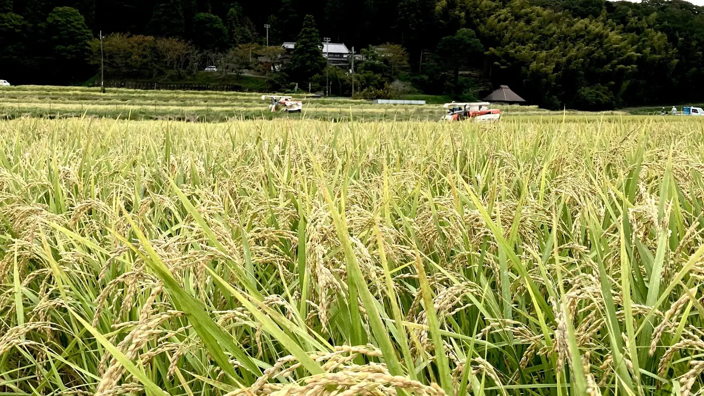
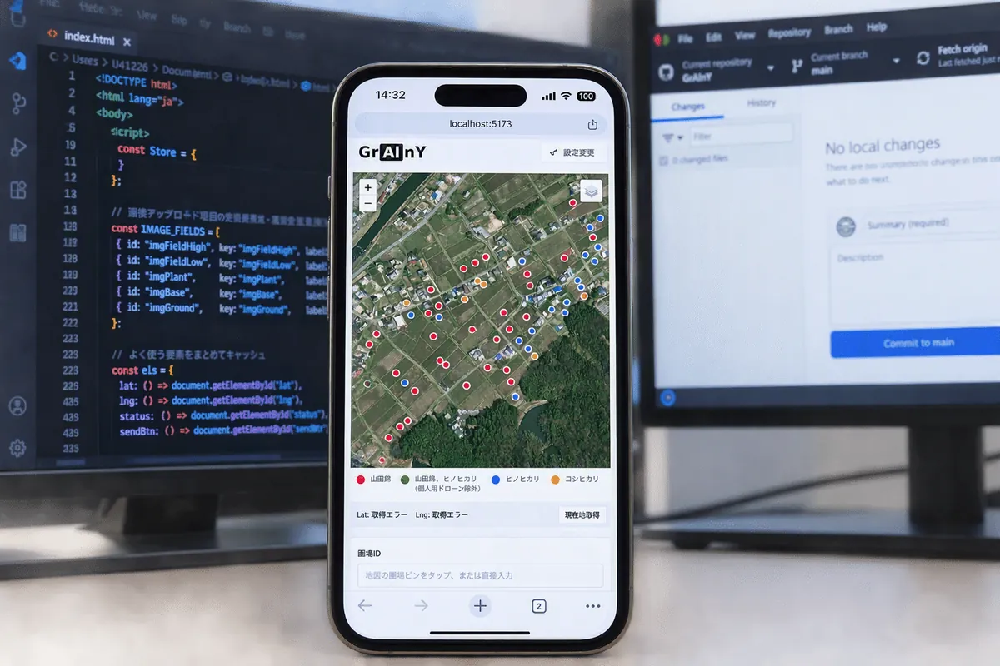
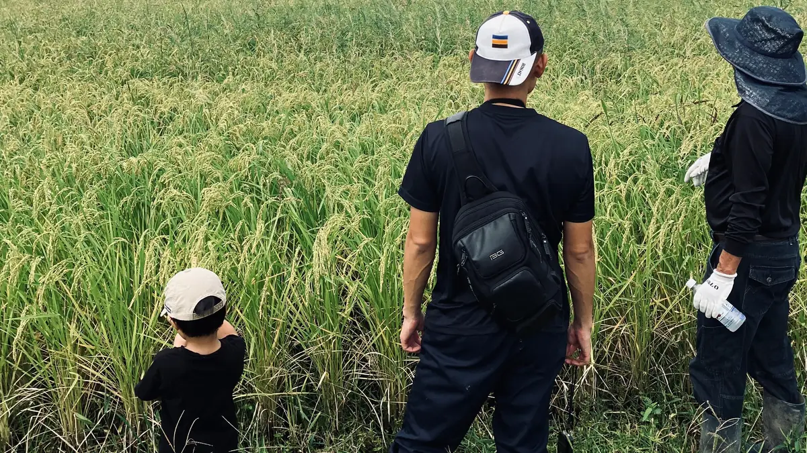

山田錦とは？
「酒米の王」の特徴と歴史を、産地・東条から解説

この記事の要点
- 山田錦は、日本酒づくりに向く「酒米（酒造好適米）」の代表品種です。全国500を超える酒造会社が使い、「酒米の王」と呼ばれます。
- 1923（大正12）年に兵庫県で交配され、現在の加東市沢部にあった試験地での試験を経て、1936（昭和11）年に誕生しました。
- 粒が大きく、中心に線状の「心白」を持つため、大きく削っても割れにくく、香り高い酒に向きます。
- 一方で、背が高く倒れやすい、病気に弱いなど、育てるのに手間がかかる品種です。
「山田錦」は、日本酒のラベルでいちばんよく見かける酒米の名前かもしれません。私たち「とうじょうRMO」は、その山田錦の産地のなかでも評価の高い「特A地区」、兵庫県加東市の東条地域で、農地と暮らしを守る活動をしています。
このページでは、山田錦とはどんなお米なのかを、公的な資料と、私たちが産地で見てきたことをもとに解説します。
1. 山田錦とは：酒米の王と呼ばれる品種
山田錦は、日本酒の原料に向くように育てられた「酒造好適米（酒米）」の品種です。ふだん食べるお米（食用米）とは、粒の大きさも中身のつくりも異なります。
加東市の広報誌によると、山田錦は全国500を超える酒造会社で使われており、その酒造適性の高さから「酒米の王者」と呼ばれています。兵庫県産の山田錦は出荷量で全国の約6割を占め、厳しい検査で「特上」「特等」と格付けされる割合も他の産地より格段に多い、量・質ともに日本一の産地です。
そのなかで加東市は、山田錦の作付面積が1,046ha（甲子園球場271個分）あり、兵庫県産山田錦の生産量の23％を担っています。三木市に次ぐ規模です。
2. 誕生の歴史：加東市で育てられた酒米
山田錦は、1923（大正12）年に兵庫県立農事試験場で生まれた品種です。母は明治時代の初めから地域で栽培されていた「山田穂」、父は滋賀県から取り寄せた「短稈渡船」。育てられている間は、両親の頭文字をとって「山渡50-7」と呼ばれていました。
この系統を育て上げたのが、1928（昭和3）年に加東郡福田村沢部（現在の加東市沢部）に設けられた酒造米試験地（現在の酒米試験地）です。1932（昭和7）年からは、初代主任の藤川禎次が試験を担当しました。試験田のあった美嚢郡奥吉川村（現在の三木市吉川町）まで、片道20キロの道のりを毎日自転車で通い、戦時中も比較試験を続けて、この系統が最も優れた酒米であることを確かめたと伝えられています。
| 年 | できごと |
|---|---|
| 1923（大正12）年 | 兵庫県立農事試験場で「山田穂」と「短稈渡船」を交配 |
| 1928（昭和3）年 | 加東郡福田村沢部（現在の加東市沢部）に酒造米試験地を設置 |
| 1932（昭和7）年 | 試験地で現地に合うかを確かめる試験を開始（初代主任・藤川禎次） |
| 1936（昭和11）年 | 1月31日に新品種として決定、2月27日に兵庫県報で告示。「山田錦」と名付けられ、兵庫県の酒米奨励品種に |
| 2025（令和7）年 | 「兵庫の酒米『山田錦』生産システム」が日本農業遺産に認定 |
藤川禎次は旧滝野町（現在の加東市）の出身で、試験地も現在の加東市にあります。こうした縁から、加東市は「山田錦のふるさと」を名乗っています。
3. 数字で見る山田錦の特徴
山田錦がどんな稲なのかを、公的な資料の数字でまとめました。
| 項目 | 山田錦 | くらべると |
|---|---|---|
| 千粒重（1,000粒の重さ） | 約27〜28g | 食用米は約22〜23g。コシヒカリの約1.3倍の大粒です。 |
| 背丈（稈長＋穂長） | 約130cm | 茎（稈長）だけで約105cm。背が高く、倒れやすい稲です。 |
| 心白の発現率 | 約65〜70％ | 資料により数字が異なります。心白の形が線状なのが特徴です。 |
| 玄米のタンパク質 | 約6％ | 酒米では、雑味のもとになるタンパク質が少ないことが望まれます。 |
| 収量（10aあたり） | 400kg前後 | 最近の品種には500kgを超えるものもあり、山田錦は少なめです。 |
| 熟期 | 晩生（おくて） | 6月上旬に田植えをし、10月上旬から中旬に収穫します。 |
| 弱いところ | 倒伏・いもち病 | 穂から籾が落ちやすい（脱粒しやすい）性質もあります。 |
出典：農林水産省掲載の日本農業遺産申請書（品種特性）、加東市「広報かとう」令和6年11月号。
4. 「心白」とは：山田錦が大吟醸に向く理由
心白（しんぱく）とは、米粒の中央にある白く不透明な部分です。小さなすき間がたくさんあるつくりのため、水を吸いやすく、麹菌の菌糸が中まで入りやすいことから、均質な麹ができるといわれます。
意外なことに、山田錦の心白は、現れる割合が特別に高いわけでも、大きいものが多いわけでもありません。断面で見ると線状になっていて、一見すると控えめです。しかし、この形のおかげで、純米大吟醸のように米を50％以上削る場合でも割れにくく、香り豊かなお酒をつくることができるといわれています。
また、心白がきれいに現れるかどうかは、穂が出てから実るまでの時期の気温に左右されます。夜の気温がしっかり下がる土地が山田錦に向くといわれるのはそのためです。
5. 山田錦を育てるのが難しい理由
山田錦は、酒蔵から高く評価される一方で、育てる側にとっては手のかかる品種です。
- 倒れやすい：茎が長いため、肥料（特に窒素分）を与えすぎると倒れてしまいます。加東市の広報誌によると、標準的な施肥量は1,000㎡あたり4.2kgで、倒れにくい最近の品種の約10kgと比べて大幅に少なく抑えます。一度にまとめて効く肥料ではなく、田植えのときと穂が出る前に分けて施肥する農家が多いのもそのためです。
- 「倒して倒さず」：産地では、穂先が地面につく寸前まで垂れた姿が、よい育ち方とされています。倒れる手前で止める、難しい加減です。
- 病気や脱粒：いもち病に弱く、穂から籾が落ちやすい性質もあり、手間がかかります。
6. 田植えから収穫まで（栽培カレンダー）
山田錦は「晩生（おくて）」と呼ばれる、実るのが遅い品種です。おおまかな1年の流れは次のとおりです。年や圃場によって前後します。
| 時期 | 作業・生育 | ポイント |
|---|---|---|
| 6月上旬 | 田植え | 倒れないよう、肥料は控えめに。田植えのときと穂が出る前に分けて施肥する農家が多くあります。 |
| 8月下旬 | 出穂（穂が出る） | ここから実るまでの気温が、心白の現れ方や品質を左右します。 |
| 9月 | 登熟（実が充実する） | 夜の気温がしっかり下がることが大切です。近年は猛暑による高温障害が課題です（高温障害対策の記事）。 |
| 10月上旬〜中旬 | 収穫 | 出穂からおよそ45日後。重くなった穂が、地面近くまで垂れます。 |
田んぼの水の管理も、品質を守る大切な作業です。東条で進めている水位の遠隔管理については、水田の水位管理を自動化する理由で紹介しています。
7. 産地の現場から：写真とデータで山田錦を見守る
猛暑による高温障害の影響を正確に比べるには、条件ごとに分けて管理した米を成分分析にかけるのがいちばん確かです。しかし、収穫期の現場は一年でもっとも忙しい時期です。運び込まれる籾、フル稼働のコンバインと乾燥機。その中で、一部のサンプルだけを別に乾燥・管理してもらうのは現実的ではありませんでした。
そこで私たちは、できることから始めました。田んぼへ行き、稲の根元、稲株全体、圃場全体を撮影し、圃場ごとの番号をつけてクラウドに保存する。そのための記録アプリも、自分たちでつくりました。

どこを撮ればよいのかは、長年山田錦を育ててきた農家さんや研究機関の方に「どこを見ていますか」と聞きながら決めています。営農法人の社員からは、田植え日や施肥日の記録も提供してもらいました。

100点のデータは、まだありません。それでも、50点のデータを集め始めることが次の改善につながると考えて、記録を続けています。うまくいかなかったことも含めて、この取り組みの結果はこのサイトと note で報告していきます。
もとになった記事：note「完璧なエビデンスはいらない。山田錦の田んぼで始めた、小さな実験（EBPM）」
8. 山田錦が育つ産地「特A地区」
山田錦は全国で栽培されていますが、どこで育ったかが品質を大きく左右するといわれ、産地には昔から「酒米買うなら土地見て買え」という言葉があります。
兵庫県の産地は「特A-a」「特A-b」「特A-c」に区分されていて、加東市の旧東条町全域は最上位の特A-aにあたります。昼夜の寒暖差、粘土質の土、東西に開けた谷あいの地形、そして産地と酒蔵を結ぶ「村米制度」が、その評価を支えてきました。
特A地区とは何か、東条が最高峰の産地といわれる理由、東条に伝わる土づくりの知恵は、「山田錦の特A地区とは？ 東条が最高峰の産地といわれる理由」でくわしく解説しています。
よくある質問
Q. 山田錦はどこで生まれた品種ですか？
兵庫県で生まれた品種です。1923（大正12）年に兵庫県立農事試験場で交配され、現在の加東市沢部に設けられた酒造米試験地での試験を経て、1936（昭和11）年に「山田錦」と名付けられました。
Q. 山田錦はなぜ「酒米の王」と呼ばれるのですか？
酒造りに向いた性質（酒造適性）が高く、全国500を超える酒造会社で使われているためです。粒が大きく、線状の心白を持つため、大きく削っても割れにくく、香り高い大吟醸づくりに向くとされています。
Q. 山田錦の千粒重はどのくらいですか？
約27〜28gです。ふだん食べるお米（食用米）の約22〜23gより大粒です。
Q. 山田錦の田植えと収穫の時期はいつですか？
6月上旬に田植えをし、8月下旬に穂が出て、出穂からおよそ45日後の10月上旬から中旬に収穫するのが一般的です。年や圃場によって前後します。
Q. 山田錦のおもな産地はどこですか？
全国で栽培されていますが、出荷量の約6割を兵庫県が占めます。中心は北播磨地域で、加東市や三木市などに、評価の高い「特A地区」と呼ばれる産地があります。くわしくは山田錦の特A地区とはをご覧ください。
参考資料
- 加東市「広報かとう」令和6年11月号 特集「酒米の王者『山田錦』」（千粒重・心白・作付面積・施肥など）
- 農林水産省 掲載資料「兵庫の酒米『山田錦』生産システム」申請書（育成の経緯・生育特性）
- 加東市「東条エリア 山田錦とお寺・神社のコース」（藤川禎次と「山田錦のふるさと」）
- 加東市「『兵庫の酒米「山田錦」生産システム』日本農業遺産認定」
- 兵庫県「兵庫の酒米」
- とうじょうRMO の note：稲穂の記事／圃場記録（EBPM）の記事

この記事を書いた「とうじょうRMO」について
岡本・森・南山の3地区が協力し、農地を守り、地域資源を活かし、暮らしを支える農村型地域運営組織（農村RMO）です。スマート農業とコミュニティの力で、山田錦の産地を次の世代へつなぐ挑戦をしています。
この挑戦の目撃者になりませんか？
とうじょうRMOでは、気候変動や担い手不足といった課題に対し、スマート農業やコミュニティの力で立ち向かっています。
私たちの活動の「いま」を、まずは公式LINEから覗いてみてください。